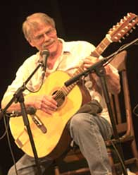
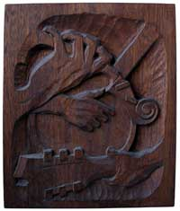
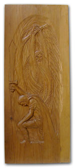
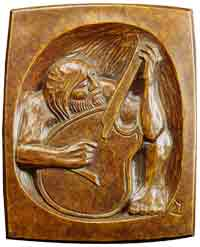

Gordon BokGordon Bok found his first music in his own dooryard. His family sang Scots, German, Italian, Australian and American traditional and popular songs -- all learned in places they had lived. As he began to work the boats along his coast, he heard the songs of the Maritimes, and ballads and chanteys from around the world. "But at home, Hank Williams was our kitchen-music, especially in coastal Maine," he said, "so I was singing those songs too, with Kendall Morse and others around home." When he couldn't find songs that matched his own experiences or needs, he began to write his own, and has kept up a lively flow of poems, songs, stories, choral and instrumental works. One Maine chorus took one of Gordon's choral works on tour in Serbia, Bulgaria, and Greece as part of their American repertoire. He reinvented and developed the cantefable/ "folk-opera" form which is now widely used by storytellers and musicians in this country. He has been a singer and caretaker of the music and liturgy of the Kalmyk Mongolians who immigrated to America in the 1950s, maintaining and circulating a collection of their surviving music among their descendants. In 2011 he was presented with Lifetime Achievement Award for this work by Rutgers University. Gordon has written, sung, and helped to preserve the heritage of of the working waterman of the Northeast, hence his honorary Doctorate from the Maine Maritime Academy. He also received the Blue Ribbon award from the American Film Festival for original music and lyrics performed by him and other local musicians for the documentary film "Coaster: The Adventure of the John F. Leavitt." Bok has always been an innovator. As a young man in Maine he was the first to bring the contradance tunes of Maine and New Brunswick into the folk guitar repertoire; when all the folk guitar players were picking out "Freight Train", Gordon was playing both guitar and fiddle parts on "Grieve's Handy", and "Hawkins' Handy." Before Bossa Nova made it to pop music charts, he helped bring South American music forward as a living presence in the American folk stream. His contributions to folk music aso include innovations to the instruments he uses. Gordon worked with friends Samuel Tibbetts and Nick Apollonio to develop the acoustic twelve string guitar to a power and diversity of sound unequaled in the field, partly as a result of the "balanced bridge" which he invented in the 1960s. Gordon also helped to promote the 'cellamba* and viola da gamba as instruments for accompanying folk music. In the 1970s, he developed and marketed the multi-keyed "Bok Whistle", an idea that has taken root in commercial whistle companies, who now build deeper instruments in different keys, as he did. Gordon's legacy includes thirty-six recordings featuring his own compositions and traditional and contemporary folk songs from around the world. He has also published two books of his own repertoire, a handmade, limited edition of his poetry and the wood engravings of Capt. Edward Porter, edited and printed by Porter, and republished Ruth Moore's book of spoken ballads Cold as Dog and the Wind Northeast. His songs, poetry, and writings have been included in various anthologies, books, websites, and sermons. Gordon's extensive repertoire provides a rich well to draw upon for his concerts, guaranteeing a unique experience everywhere he performs. He has never sung the same solo concert twice. Gordon has toured throughout the United States, Canada, the United Kingdom, New Zealand and Australia and has gathered many friends and fans throughout the world. He has performed with many other artists, and both toured and recorded with the trio Bok, Muir, and Trickett for 30 years, and with his wife, harpist and singer Carol Rohl. At home in Maine he helped start two choruses, both still thriving after many years, and has been an encouraging force behind other singers in their efforts to record their own music and launch their own musical careers. For most of his life Gordon has been a woodworker, having grown up with the local shipyard as his playground and place of learning. While not a boat builder, he has built a few small boats and repaired and maintained several larger ones. He has designed and built tools and articles of furniture to his needs, as well as the odd house, shelter, and barn. Wood sculpture is a natural extension of his woodworking. His bas-relief carvings celebrate the people, boats, and fisheries he grew up with around the coast of Maine. Gordon has the ability to capture a way of life or to define a rare momen with an intimacy that is immediately engaging. Sometimes his art takes the form of poetry, and often the words find their way into a song. Sometimes there are no words, just deft fingers coaxing the story out of the guitar strings. Sometimes this intimacy is carefully carved into a slab of wood. Gordon has been a woodcarver for over thirty years; it is just another way to preserve the ideas and culture that are expressed in his songs. He calls himself a 'rememberer': a keeper of songs and stories, a keeper of our traditions, our ways of thinking, that set us apart from others yet confirm our place in the flow of humanity.
"I refuse to tell my audiences what to think or feel: I respect them too much for that. I will sing them what I honor and trust them to sort out what they can use. "I'm drawn to songs that show me how others have lived their lives and sorted through their problems -- that's the great wisdom in traditional music, and in the songs that will become the tradition in other generations. They've shown me how to live, and if others learn something from my passing them on, that's another pleasure." Gordon finally ceased touring in 2017, preferring to stay closer to home where he can develop his sculpture, writing, and recording, and work with his choruses, his wife Carol, and other local musicians. He limits his concerts and art shows to the state of Maine, and spends much of his time among the bays and islands on a boat, upon which he and his wife Carol have concocted much. *chel-amba: a Viola da Gamba rig on a 'cello body. This was once a common conversion.
|
 When asked about the focus of his work he has said "I try to keep hope alive in myself and others. I write to keep myself on track, to find out what I need to do in the world. Some of my larger and more difficult works have turned out to be blueprints that, when I trusted them, have guided my life.
When asked about the focus of his work he has said "I try to keep hope alive in myself and others. I write to keep myself on track, to find out what I need to do in the world. Some of my larger and more difficult works have turned out to be blueprints that, when I trusted them, have guided my life.